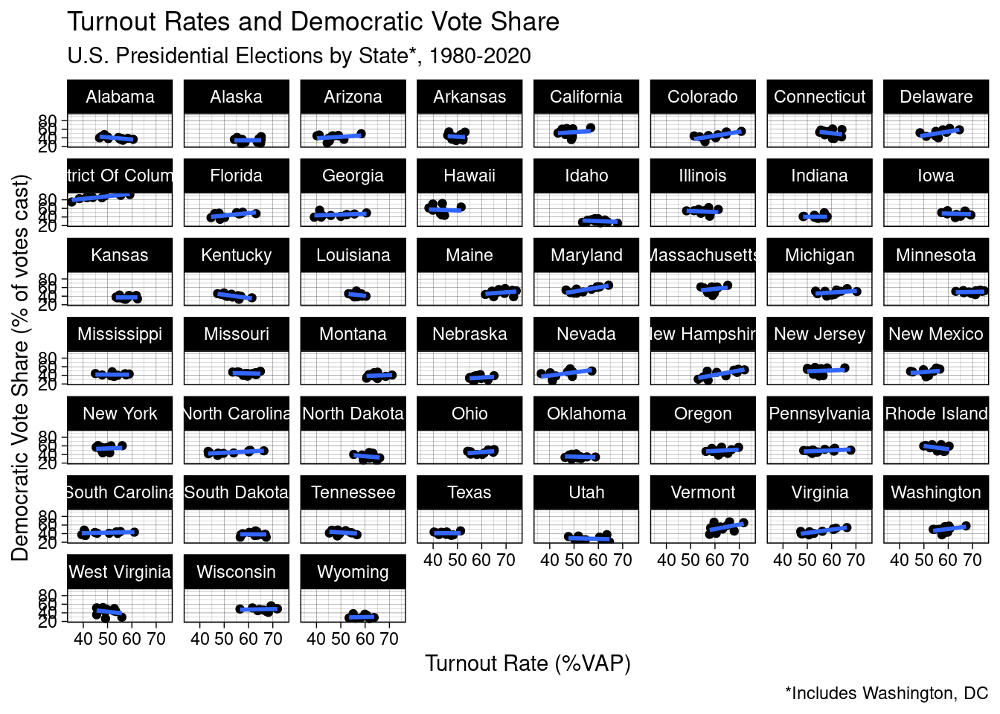
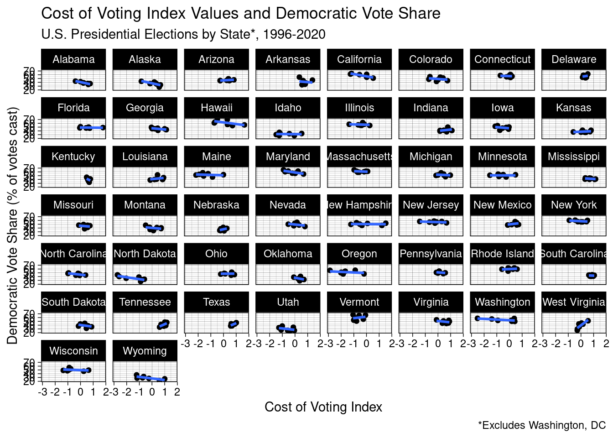
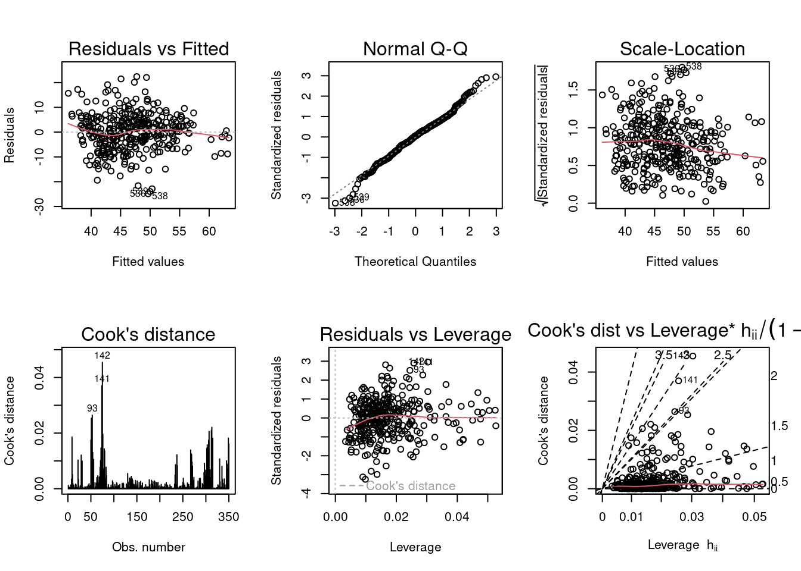

── Attaching packages ─────────────────────────────────────── tidyverse 1.3.2 ──
✔ ggplot2 3.4.0 ✔ purrr 1.0.0
✔ tibble 3.1.8 ✔ dplyr 1.0.10
✔ tidyr 1.2.1 ✔ stringr 1.5.0
✔ readr 2.1.3 ✔ forcats 0.5.2
── Conflicts ────────────────────────────────────────── tidyverse_conflicts() ──
✖ dplyr::filter() masks stats::filter()
✖ dplyr::lag() masks stats::lag()
Attaching package: 'plm'
The following objects are masked from 'package:dplyr':
between, lag, lead
Loading required package: zoo
Attaching package: 'zoo'
The following objects are masked from 'package:base':
as.Date, as.Date.numeric
Please cite as:
Hlavac, Marek (2022). stargazer: Well-Formatted Regression and Summary Statistics Tables.
R package version 5.2.3. https://CRAN.R-project.org/package=stargazer Assessing the effects of turnout and cost of voting on partisan outcomes in American Presidential elections
Introduction
It is no secret that American elections are currently facing high levels of skepticism, scrutiny, and distrust. Claims of fraud have worked their way through the body politic and convinced a number of individuals that the results of the 2020 election were illegitimate. Conservative political elites, most prominently in the case of Georgia, have seized on this moment to win passage of restrictive bills in the name of electoral security, touching many aspects of voting access including voter ID laws, early voting, and registration.
It should, perhaps, come as no surprise that this wave of electoral skepticism coincides with record-breaking levels of electoral turnout. As more people show up to vote, it makes some sense that individuals may be concerned as to how well the electoral system is scaling up. It may also be the case that certain individuals or groups may not welcome increased turnout from certain other individuals or groups. This is especially important in the context of partisan turnout bias, the purported phenomenon of Democrats benefitting from increases in voter turnout. Whether or not this phenomenon truly does occur has been argued for decades in the political science literature (e.g. DeNardo 1980, Tucker Vedlitz and Denardo 1986, Shaw and Petrocik 2020), but belief in its existence has become more popular in the public mind since the Obama era (e.g. Epstein 2021). Among academics, however, a consensus has hardly been reached as to whether or not turnout truly does benefit Democrats. Shaw and Petrocik (2020), a recent and substantial contribution to the literature, argues strongly against the phenomenon. One of the central theoretical components to their argument is the proposition that, contrary to much of the literature, there is no reason to believe that an individual’s decision to turn out to vote and their vote choice are endogenous. This removes any potential causal mechanism that would link turnout to a partisan advantage. To their credit, they do bring large swathes of empirical data to bear on their argument as well.
However, this study takes issues with Shaw and Petrocik’s argument that turnout and vote choice are not endogenous. This study, rather, takes the perspective that the cost of voting that an individual or group faces is a key component to whether or not they vote, and also provides a mechanism by which this turnout factor and vote choice can be endogenous. If we suppose for the sake of argument that certain individuals do face higher costs to voting than others, it would make sense from a rational-actor perspective for these individuals, all other things being equal, to support a political party that would seek to lower these costs and open up voting opportunities to such disenfranchised individuals. It is not controversial to say that, between the two major parties, the Democrats have been the ones to posture themselves as the party in favor of reducing the cost of voting, particularly for those who face more restrictions to the franchise; in the last century, the most significant shakeup to the party system came as a result of the Democrats’ support of the Civil Rights Movement, with the Voting Rights Act of 1965 being one of the single most significant legislative aspects of this support. It also should not be controversial to argue that certain individuals and indeed groups seem to face higher costs to voting than others in the United States, largely along the lines of class/socioeconomic status and race/ethnicity. Thus, it can be argued:
that individuals who face higher barriers to voting than others could be motivated to support the Democratic Party by virtue of those very restrictions that they face;
that, by virtue of these restrictions, these individuals would make up a peripherial group of voters, needing to overcome not only personal decision-making but also external obstacles in order to vote;
that, assuming core voters are already likely to vote in most elections, an increase in turnout in a given election would be likely to draw from peripheral voters; and,
thus, an increase in turnout in a given election would draw in part from a group of peripheral voters inclined to vote Democrat and would thus benefit Democrats.
The hypothesis tested by this study, then, is as follows:
\(H_1\): Higher turnout will benefit Democrats in state-level Presidential elections.
Design
This study utilizes data on United States Presidential elections obtained from the MIT Elections Lab; raw data includes vote totals for candidates in each of the 50 states and the District of Columbia from 1976 to 2020, while the final cleaned dataset counted votes by party rather than by candidate. Turnout data was obtained from the United States Elections Project for electons from 1980 to 2020. Additionally, because the underlying theory behind this study relies heavily on the concept of the cost of voting, data from the Cost of Voting Index (COVI) project was also utilized in this study; COVID-adjusted values were used for 2020 elections, and raw values were used for all other elections. COVI data was only available from 1996 to 2020, and unfortunately hasnot yet been made available for the District of Columbia. All data was obtained in October 2022.
The primary mechanism used for testing the hypothesis was a two-way fixed effects linear regression model testing Democratic vote share against turnout rate. The two-way nature of the model specifies that the model controls for both state-level and time fixed effects. Controls were added for COVI values, other cost-of-voting-related metrics (namely: the rate of the state’s population ineligible due to felony conviction, and the rate of the state’s population that are not citizens), and logged state population size. For comparison, a pooled linear model will also be shown for comparison, as a demonstration of why the fixed-effects model is used. Additionally, a logistic regression model controlling for state-level fixed effects is included testing a binary variable for Democratic victory against turnout rate, with the same controls. Lastly, a two-way fixed effects model is included that tests turnout rate itself against the controls added for cost of voting and population size.
It should be said that these models fall short of perfection in a number of ways. For one, a case could be made for using a random-effects as opposed to a fixed-effects model, as the latter assumes a uniform effect across states and only allows for a change in intercept. While I believe a random-effects model could be useful in future study, fixed-effects models have been employed in the study of this question in the past - in Shaw and Petrocik (2020), to name one - and are a useful tool in assessing the impact of the specific phenomenon of voter turnout on partisan outcomes. Separately, and perhaps more seriously, a number of traditional controls are missing from the analysis, such as those for incumbency and economic factors leading up to the election. These were excluded primarily as a matter of time and access to data, but would also make useful contributions to future study. Lastly, COVI data, while valuable, was limiting, preventing any data from DC or from elections prior to 1996 from being included in the models that control for cost of voting. The values themselves could also be potentially endogenous with a state’s partisan lean (i.e. a “red” state might be more likely to pass voter ID laws in the first place, rather than voter ID laws causing a decrease in votes for Democrats), and, while a fixed-effects model should help to control for state-level partisan effects, future research may benefit from analyzing election-over-election changes in COVI values in addition to the values themselves.
Results
Rows: 4287 Columns: 15
── Column specification ────────────────────────────────────────────────────────
Delimiter: ","
chr (6): state, state_po, office, candidate, party_detailed, party_simplified
dbl (7): year, state_fips, state_cen, state_ic, candidatevotes, totalvotes, ...
lgl (2): writein, notes
ℹ Use `spec()` to retrieve the full column specification for this data.
ℹ Specify the column types or set `show_col_types = FALSE` to quiet this message.
`summarise()` has grouped output by 'party_simplified', 'state'. You can override using the `.groups` argument.
New names:
New names:
Joining, by = "state"
New names:
Joining, by = c("state", "year")
Joining, by = c("abbrev", "year")Visualizations
`geom_smooth()` using formula = 'y ~ x'Warning: Removed 51 rows containing non-finite values (`stat_smooth()`).Warning: Removed 51 rows containing missing values (`geom_point()`).
`geom_smooth()` using formula = 'y ~ x'Warning: Removed 250 rows containing non-finite values (`stat_smooth()`).Warning: Removed 250 rows containing missing values (`geom_point()`).


(Duplicate PNG images are included for higher resolution visibility.)
The above plots provide a state-by-state breakdown of the relationships between turnout rate or Cost of Voting Index (COVI) values, and Democratic vote share. While there is hardly any uniform effect, a number of states exhibit a positive relationship between turnout rate and Democratic vote share, supporting \(H_1\). Additionally, a number of states exhibit a negative relationship between COVI values and Democratic vote share, lending initial support to the idea that cost of voting and voting access may be the underlying mechanisms behind why a relationship between turnout rate and Democratic vote share might exist.
Pooled Linear Model
We will begin by briefly assessing a pooled linear model and identifying the reasons why a fixed-effects model is more appropriate for the panel data at hand.
Pooled (Basic OLS) Models of Democratic Vote Share Against Turnout
========================================================================================================================
Dependent variable:
-----------------------------------------------------------------------------------------
Democratic Vote Share
(1) (2) (3) (4)
------------------------------------------------------------------------------------------------------------------------
Turnout Rate (%VAP) -0.047 0.272***
(0.059) (0.063)
Turnout Rate (%VEP) 0.131** 0.257***
(0.059) (0.059)
Cost of Voting Index -0.311 -0.298
(0.629) (0.629)
Ineligible Felon Rate (%VAP) -2.919*** -3.072***
(0.562) (0.559)
Noncitizen Rate (%VAP) 1.184*** 1.029***
(0.143) (0.134)
Voting-Age Population (logged) 1.120** 1.095**
(0.497) (0.497)
Constant 48.058*** 37.743*** 12.009 13.233*
(3.347) (3.519) (7.706) (7.579)
------------------------------------------------------------------------------------------------------------------------
Observations 561 561 350 350
R2 0.001 0.009 0.326 0.327
Adjusted R2 -0.001 0.007 0.317 0.317
Residual Std. Error 10.643 (df = 559) 10.603 (df = 559) 7.713 (df = 344) 7.710 (df = 344)
F Statistic 0.613 (df = 1; 559) 4.888** (df = 1; 559) 33.352*** (df = 5; 344) 33.437*** (df = 5; 344)
========================================================================================================================
Note: *p<0.1; **p<0.05; ***p<0.01
The models shown are simple and robust OLS regression models analyzing Democratic vote share (the ratio of votes cast for Democrats to votes cast in total, expressed as a percent) against turnout rate (number of votes cast as a percent of either voting-age population [%VAP] or voting-eligible population [%VEP], a more selective but generally regarded as a more reliable measure). It should be stated that, in all models, a single “case” or observation is an election-year – that is, Presidential election results from Alabama in 2004, or Missouri in 1980, for instance. It should also be restated that COVI values were not available for DC or for elections prior to 1996, and that models controlling for COVI will therefore have fewer observations. The diagnostic plots above correspond to the robust pooled model with %VAP turnout rate as the primary explanatory variable (model 3 in the above table).
At first glance, these models appear to be promising, particularly the robust models (3 & 4) – the effect of turnout is significant, and the R-squared and adjusted R-squared values are healthy. This certainly helps to lend preliminary credence to the notion that this study’s hypothesis is supported, but the due diligence must go further.
Reviewing the diagnostic plots does not immediately highlight any issues either, which is positive. It appears by the Cook’s Distance plot that there are a few outliers, which is likely to be expected. Some slight irregularities in the Scale-Location plot could probably be explained away. However, knowing that this dataset is ultimately a panel dataset should make us more suspicious and lead us to test for heteroskedasticity more rigorously – and indeed, the minuscule p-value obtained from running a Breusch-Pagan test makes abundantly clear that these data are heteroskedastic:
studentized Breusch-Pagan test
data: pooled_vap
BP = 77.343, df = 5, p-value = 3.015e-15Overall, the fact that this data set consists of panel data means that a fixed-effects model will be more appropriate in interpreting and analyzing the data than a simple OLS/pooled model, which is not able to control for specific state-level or time effects the way the fixed-effects model can. What is more, the finding of heteroskedasticity suggests that a fixed-effects model on its own might not even be a fully appropriate modelling tool; for the sake of robustness, then, fixed-effects models will be re-run with clustered standard errors, and the results of both models reported below.
Fixed-Effects Models
Logit Model – Democratic Victory
Democratic State Win, State-Level Fixed Effects Logit Models
==================================================================
Dependent variable:
-----------------------------------
Democratic State Victory
(1) (2) (3) (4)
------------------------------------------------------------------
Turnout Rate (%VAP) 0.120*** 0.151*
(0.029) (0.081)
Turnout Rate (%VEP) 0.134*** 0.159**
(0.026) (0.079)
Cost of Voting Index -0.951* -0.958*
(0.577) (0.577)
Ineligible Felon Rate (%VAP) -2.316** -2.386**
(1.112) (1.118)
Noncitizen Rate (%VAP) -1.037** -1.169**
(0.486) (0.513)
Voting-Age Population (logged) 1.351 0.678
(3.825) (3.923)
------------------------------------------------------------------
Observations 561 561 350 350
Log Likelihood -200.557 -194.623 -61.789 -61.441
Akaike Inf. Crit. 505.114 493.246 233.578 232.883
==================================================================
Note: *p<0.1; **p<0.05; ***p<0.01
Democratic State Wins, State-Level Fixed Effects Logit Models w/ Clustered SEs
==================================================================
Dependent variable:
-----------------------------------
Democratic State Victory
(1) (2) (3) (4)
------------------------------------------------------------------
Turnout Rate (%VAP) 0.120*** 0.151*
(0.028) (0.086)
Turnout Rate (%VEP) 0.134*** 0.159*
(0.027) (0.085)
Cost of Voting Index -0.951* -0.958*
(0.557) (0.561)
Ineligible Felon Rate (%VAP) -2.316* -2.386*
(1.368) (1.358)
Noncitizen Rate (%VAP) -1.037** -1.169**
(0.527) (0.561)
Voting-Age Population (logged) 1.351 0.678
(4.463) (4.540)
==================================================================
==================================================================
Note: *p<0.1; **p<0.05; ***p<0.01Logit models were included that tested a binary variable for whether or not a Democratic candidate won a given election against turnout rate and the same controls as above. Once again, turnout rate has a significant effect (in both the basic and clustered SE models) on Democratic victory, but this effect starts to come into question in the multivariate models. Interestingly, noncitizen rate (percent of the Voting-Age Population that is ineligible to vote due to noncitizenship, which alongside Ineligible Felon Rate modifies the VAP figure into the VAP figure) is the only explanatory variable that maintains significance across all models, both basic and clustered SE. All other explanatory variables aside from logged VAP are significant at a 10% level or lower across all models. Once again, the overall takeaway of these models is that it is hard to draw any firm conclusions from the information at hand, but that there is a case to made that turnout rate and cost of voting at least partially affect partisan election outcomes.
A Note on Turnout and Cost of Voting
Possible Explanatory Variables for Turnout, Two-Way Fixed Effects Linear Models
==================================================================
Dependent variable:
-----------------------------------
%VAP Turnout Rate %VEP Turnout Rate
(1) (2)
------------------------------------------------------------------
Cost of Voting Index -0.375 -0.429
(0.266) (0.284)
Inelgibile Felon Rate (%VAP) -1.348*** -0.993**
(0.455) (0.486)
Noncitizen Rate (%VAP) -0.161 0.466*
(0.249) (0.266)
Voting-Age Population (logged) 10.363*** 12.633***
(2.804) (2.996)
------------------------------------------------------------------
Observations 350 350
R2 0.095 0.105
Adjusted R2 -0.089 -0.077
F Statistic (df = 4; 290) 7.617*** 8.533***
==================================================================
Note: *p<0.1; **p<0.05; ***p<0.01
Possible Explanatory Variables for Turnout, Two-Way Fixed Effects Linear Models w/ Clustered SEs
===========================================================
Dependent variable:
----------------------------
Turnout Rate (%VAP, %VEP)
(1) (2)
-----------------------------------------------------------
Cost of Voting Index -0.375 -0.429
(0.314) (0.333)
Inelgibile Felon Rate (%VAP) -1.348* -0.993
(0.701) (0.732)
Noncitizen Rate (%VAP) -0.161 0.466
(0.329) (0.351)
Voting-Age Population (logged) 10.363** 12.633***
(4.297) (4.685)
===========================================================
===========================================================
Note: *p<0.1; **p<0.05; ***p<0.01It felt prudent to check whether the controls being used were themselves correlated with turnout rate in any way. Adjusted R-squared is very low for both the %VAP and %VEP models. Interestingly, the only variable to maintain significance at the 5% level is logged VAP size, suggesting that turnout rate increases as population size increases. It is not clear what sort of conclusion can be drawn from this finding. Overall, it does not appear that there is any reason to worry about multicollinearity between these variables.
Conclusions
Overall, the results of the above models and analysis suggest that evidence in favor of \(H_1\) and the notion of pro-Democratic turnout bias in American presidential elections is inconclusive. However, the significance of COVI values and other voting access-related variables suggests that there may be credence behind the underlying theoretical argument of cost of voting acting as a mechanism for turnout bias. This is an important finding, and should open a door for further research on this subject. For instance, it is of vital importance to understand the causal direction between cost of voting and partisan bias, assuming a substantial effect can be found; if higher costs of voting consistently disadvantage Democratic candidates, then the legitimacy of a number of regulatory laws passed in the name of electoral fairness/security/etc. is immediately called into question. Ultimately, this study does not put to bed arguments over the veracity of the pro-Democratic turnout bias phenomenon. However, it does open an important door around the direction in which this field of study ought to proceed. Hopefully this further research will be able to find significant, conclusive results one way or the other.
Works Cited
DeNardo, James. 1980. “Turnout and the Vote: The Joke’s on the Democrats.” The American Political Science Review 74 (2): 406–20. https://doi.org/10.2307/1960636.
Epstein, Reid J. 2021. “The Democratic Turnout Myth Unravels.” The New York Times, November 4, 2021, sec. U.S. https://www.nytimes.com/2021/11/04/us/politics/democrats-turnout-virginia.html.
Hlavac, Marek (2022). stargazer: Well-Formatted Regression and Summary Statistics Tables. R package version 5.2.3. https://CRAN.R-project.org/package=stargazer
Shaw, Daron R., and John R. Petrocik. 2020. The Turnout Myth: Voting Rates and Partisan Outcomes in American National Elections. New York, NY: Oxford University Press.
Tucker, Harvey J., Arnold Vedlitz, and James DeNardo. 1986. “Does Heavy Turnout Help Democrats in Presidential Elections?” The American Political Science Review 80 (4): 1291–1304. https://doi.org/10.2307/1960868.